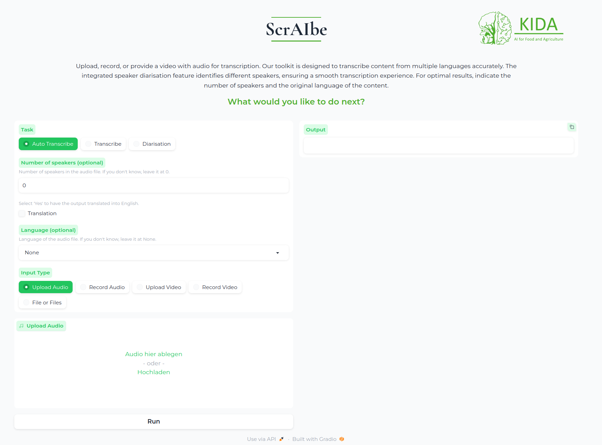

ScrAIbe: Streamlined Conversation Recording with Automated Intelligence Based Environment
ScrAIbe is a state-of-the-art, PyTorch based multilingual speech-to-text framework to generate fully automated transcriptions.
Beyond transcription, ScrAIbe supports advanced functions, such as speaker diarization and speaker recognition.
Designed as a comprehensive AI toolkit, it uses multiple AI models:
whisper: A general-purpose speech recognition model.
payannote-audio: An open-source toolkit for speaker diarization.
The framework utilizes a PyanNet-inspired pipeline, with the Pyannote library for speaker diarization and VoxCeleb for speaker embedding.
During post-diarization, each audio segment is processed by the OpenAI Whisper model, in a transformer encoder-decoder structure. Initially, a CNN mitigates noise and enhances speech. Before transcription, VoxLingua identifies the language segment, facilitating Whisper’s role in both transcription and text translation.
The following graphic illustrates the whole pipeline:


Install ScrAIbe :
The following command will pull and install the latest commit from this repository, along with its Python dependencies.
pip install scraibe
Python version: Python 3.8
PyTorch version: Python 1.11.0
CUDA version: Cuda-toolkit 11.3.1
In order to run scraibe properly, it is recommended to reinstall pytoch using:
pip install torch==1.11.0+cu113 torchvision==0.12.0+cu113 torchaudio==0.11.0+cu113 --extra-index-url https://download.pytorch.org/whl/cu113
This ensures that the right torchaudio version is installed.
Important: For the Pyannote model, you need to be granted access to Hugging Face.
Check the Pyannote model page to get access to the model.
Additionally, you need to generate a Hugging Face token.
Usage
We’ve developed ScrAIbe with several access points to cater to diverse user needs.
Python usage
It enables full control over the functionalities as well as process customization.
from scraibe import Scraibe
model = Scraibe(use_auth_token = "hf_yourhftoken")
text = model.autotranscribe("audio.wav")
print(f"Transcription: \n{text}")
The Scraibe Class is taking care of the models being properly loaded. Therefore, you can choose the other whisper models using the whisper_model keyword.
You can also change the pyannote diarization model using the dia_model keyword.
As input, autoranscribe accepts every format which is compatible with ffmgeg. Examples therefore are .mp4 .mp3 .wav .ogg .flac and many more.
To further control the pipeline of ScrAIbe you can parse almost any keyword you also cloud parsed towards whisper or pyannote if you need more option, try to check out the documentations tows two Frameworks, you might have a good chance that these keywords will work here as well.
Here’s are some examples regarding the diarization (which relies on the pyannote pipeline):
num_speakersNumber of speakers in the audio filemin_speakersMinimal Number of speakers in the audio filemax_speakersmaximal Number of speakers in the audio file
Then there are arguments about the transcription process, which uses the “whisper” model.
languageSpecify the language (list to supported languages)taskcan be justtranscribeortranslate. Iftranslateis selected, the transcribed audio will be translated to English.
{kind=link}
For example:
text = model.autotranscribe("audio.wav", language="german", num_speakers = 2)
Scraibe also contains the option to just do a transcription
transcription = model.transcribe("audio.wav")
or just do a diarization:
diarization = model.diarize("audio.wav")
Command-line usage
Next to the Pyhton interface, you can also run ScrAIbe using the command-line interface:
scraibe -f "audio.wav" --hf-token "hf_yourhftoken" --language "german" --num_speakers 2
For the full list of options, run:
scraibe -h
Gradio App
The Gradio App is a user-friendly interface for ScrAIbe. It enables you to run the model without any coding knowledge. Therefore, you can run the app in your browser and upload your audio file, or you can make the Framework avail on your network and run it on your local machine.
Running the Gradio App on your local machine
To run the Gradio App on your local machine, just use the following command:
scraibe --start_server --port 7860 --hf_token hf_yourhftoken
--start_server: Command to start the Gradio App.--port: Flag for connecting the container internal port to the port on your local machine.--hf_token: Flag for entering your personal HuggingFace token in the container.
When the app is running, it will show you at which address you can access it. The default address is: http://127.0.0.1:7860 or http://0.0.0.0:7860
After the app is running, you can upload your audio file and select the desired options. An example is shown below:

Running a Docker container
Another option to run ScrAIbe is to use a Docker container. This option is especially useful if you want to run the model on a server or if you would like to use the GPU without dealing with CUDA. After you have installed Docker, you can execute the following commands in the terminal.
First, you need to build the Docker image. Therefore, you need to enter your HuggingFace token and the image name.
docker build . --build-arg="hf_token=[enter your HuggingFace token] " -t scraibe
After the image is built, you can run the container with the following command:
sudo docker run -it -p 7860:7860 --name [container name][image name] --hf_token [enter your HuggingFace token] --start_server
-p: Flag for connecting the container internal port to the port on your local machine.--hf_token: Flag for entering your personal HuggingFace token in the container.--start_server: Command to start the Gradio App.
Inside the container, the cli is used. Therefore, you can use the same commands as in the command-line interface.
Enabling GPU usage
To use the GPU, ensure your Docker installation supports GPU usage.
For further information, check: https://docs.nvidia.com/datacenter/cloud-native/container-toolkit/install-guide.html#docker
To enable GPU usage, you need to add the following flag to the docker run command:
docker run -it -p 7860:7860 --gpus 'all,capabilities=utility' --name [container name][image name] --hf_token [enter your HuggingFace token] --start_server
For further guidance, check: https://blog.roboflow.com/use-the-gpu-in-docker/
Documentation
For further insights, check the documentation page.
Contributions
We are happy to have any interest in contributing and about feedback: In order to do that, create an issue with your feedback or feel free to contact us.
Roadmap
The following milestones are planned for further releases of ScrAIbe:
Model quantization
Quantization to empower memory and computational efficiency.Model fine-tuning
In order to be able to cover a variety of linguistic phenomena.
For example, currently ScrAIbe is able to transcribe word by word, but ignores filler words or speech pauses. These phenomena can be addressed by fine-tuning with the corresponding data.
Implementation of LLMs
One example is the implementation of a summarization or extraction model, which enables ScrAIbe to automatically summarize or retrieve the key information out of a generated transcription, which could be the minutes of a meeting.Executable for Windows
Contact
For queries contact Jacob Schmieder
License
ScrAIbe is licensed under GNU General Public License.
Acknowledgments
Special thanks go to the KIDA project and the BMEL (Bundesministerium für Ernährung und Landwirtschaft), especially to the AI Consultancy Team.